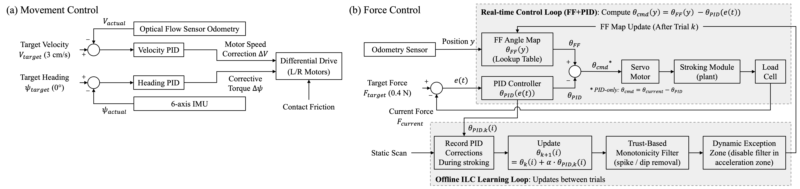
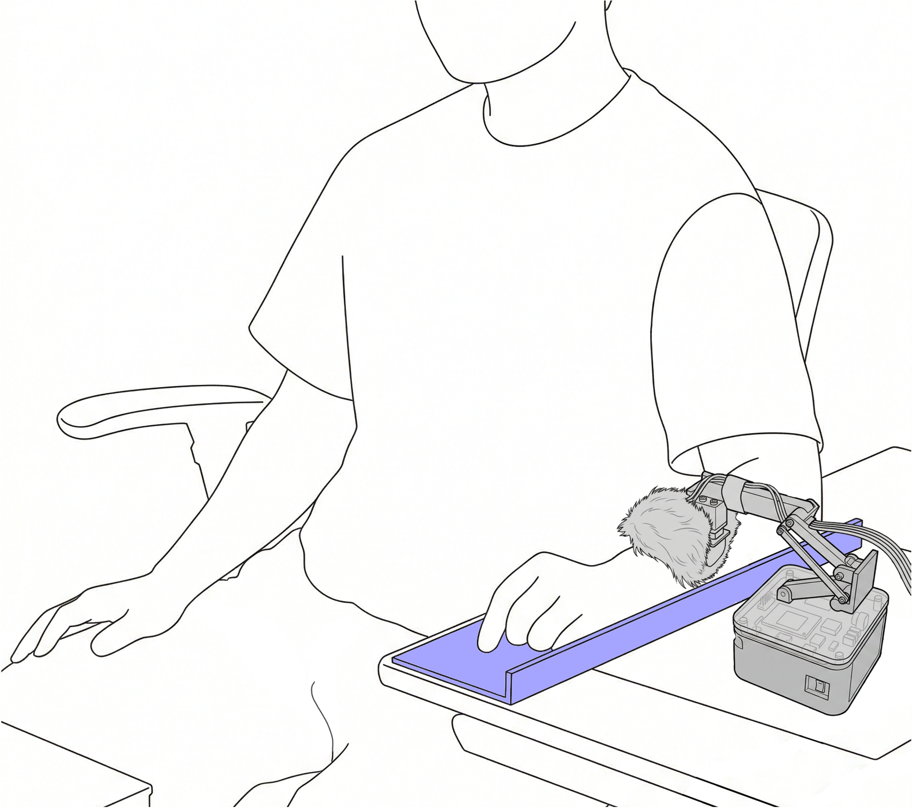

Overview
Device


Device Demonstration
Parallel stroking
Orthogonal stroking
CT-optimal touch activates C-tactile afferents through gentle stroking at 3 cm/s with 0.4 N contact force, promoting relaxation and stress reduction. Existing devices are either stationary (precise but laboratory-bound) or wearable (portable but limited in force control).
We propose a tabletop mobile robot that delivers CT-optimal touch to the forearm during desk work, combining a motorized parallel-linkage stroking module with real-time force sensing. A feedforward+PID controller uses iterative surface learning to compensate for forearm curvature. A within-subjects study with 20 participants compared FF+PID against PID-only across parallel and orthogonal stroking directions.
FF+PID significantly reduced force error, variability, and temporal fluctuations in both directions with large effect sizes. No differences were found in subjective evaluation, yet electrodermal activity analysis indicated reduced physiological arousal under FF+PID in the orthogonal direction.

Two-phase per-participant calibration adapts $\boldsymbol{\theta}_{\text{FF}}(y)$ to each participant's forearm geometry. Key parameters: $N = 5$ measurement points, $K = 5$ learning trials, $\alpha = 1.0$, $F^* = 0.4$ N.

20 participants performed a within-subjects experiment (2 directions × 2 controllers = 4 conditions, counterbalanced). Each condition consisted of 10 round-trip stroking cycles at 3 cm/s with a target force of 0.4 N.
All resources will be released through a single repository upon publication.